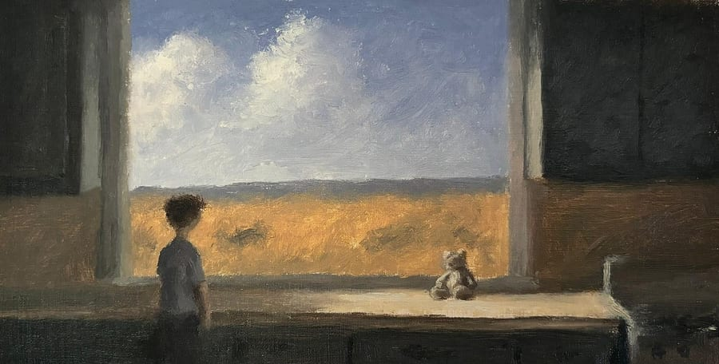
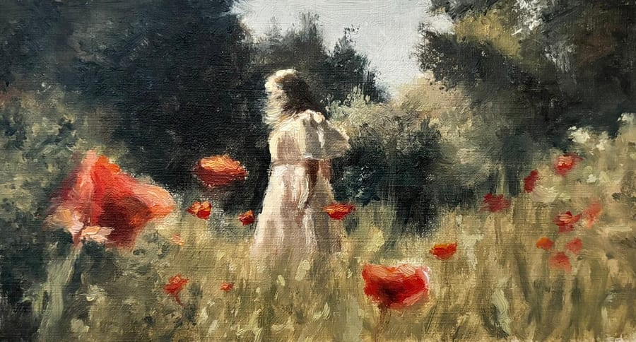
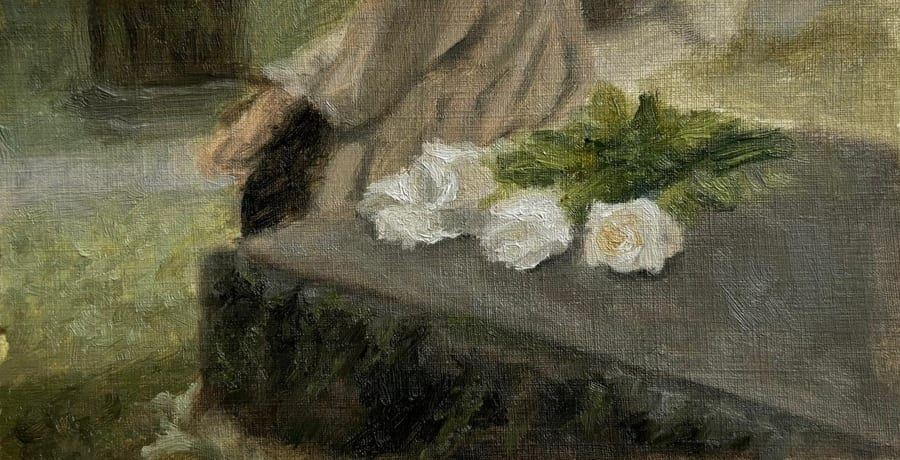
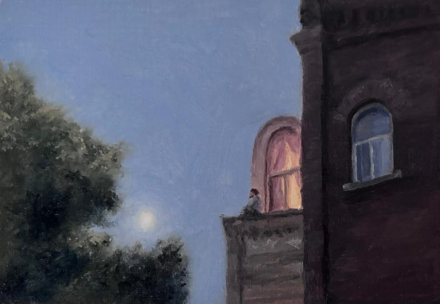
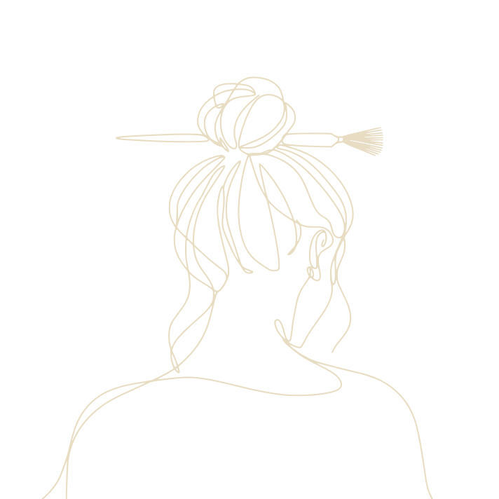

Summer, Left Open
Every summer had a window like this, open all afternoon, the field almost too bright to look at. I kept the room dim so the outside could do all the shining. The bear keeps watch so the boy doesn’t have to.
oil paintings

Every summer had a window like this, open all afternoon, the field almost too bright to look at. I kept the room dim so the outside could do all the shining. The bear keeps watch so the boy doesn’t have to.

I painted the poppies loosely on purpose, the way you remember flowers rather than see them. She’s walking away from us, but not sadly. She has just found the quiet part of the field and isn’t ready to share it.

White roses set down on cool stone, and a hand already moving on. I cropped the figure so the flowers would be what you remember. Some things you put somewhere safe, to come back to later.

The road bends one way and she keeps to the other, holding more wildflowers than she can carry. I remember being that small and that sure of the way. The sky was the color of the inside of a shell, so I took my time with it.

A rooftop, a lit window, and someone sitting outside it long after everyone else has gone to bed. I like not knowing why they’re still awake. The moon behind the tree is the only one keeping them company.

A small house under a big tree, one window still lit. Out front, someone sits in the blue dark with an empty chair beside them. Whoever left the light on did it so somebody could find their way back.
